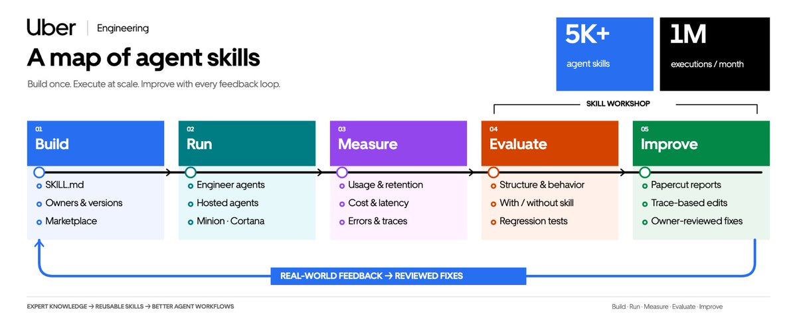
1企业规模上的技能
技能是一份 Markdown 文件，教 AI agent 把一件活干好：开一条拉取请求、查指标库、列一周销售演示大纲。技能是 Uber 软件工厂的一块砖。Uber 的共享技能市场从 2025 年 10 月的 1 个技能，一年长到 5,000 多个。几千人写过技能。一个月里，agent 调用技能超过 100 万次。
到了企业规模，技能的管理、质量、效率、分发，带来许多问题和机会。这篇写给正在公司里铺 agent 的团队。我们分享怎样改善 AI 启用，以及怎样让 agent 来帮忙。
2技能是什么
技能是一段工作流，「企业的原子单位是工作流。」1 一份技能打包一段工作流：一份 runbook、一个团队的流程、或专家亲手做的一项任务。它可以短到改一张 Linear 工单，也可以长到一次完整的根因分析。
磁盘上，技能是一个目录。里面的 SKILL.md 有名字、描述、一段说明正文。目录里还可以放脚本和参考文件。Agent 分三阶段加载，所以几千份技能每份只花一段短描述：
- 一直加载：名字和描述，大约 100 token。Agent 用描述判断这份技能适不适合。
- 技能跑起来才加载：正文，压在 500 行以内。
- 按需加载：脚本和参考，只有用到那一步才读。
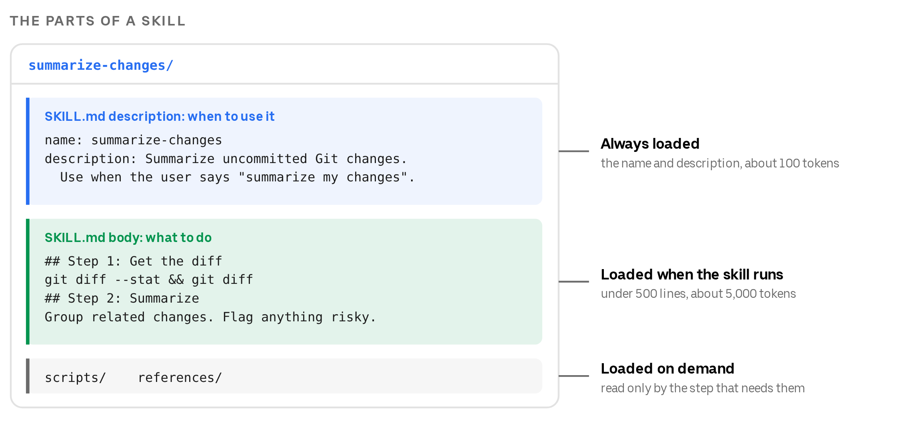
3怎样分发
我们给所有人一个地方放技能，人在哪用 agent，技能都容易加载。最好的地方后来是一个 Git 仓库，因为版本控制已经给每份技能一个主人、一次评审、一份历史。
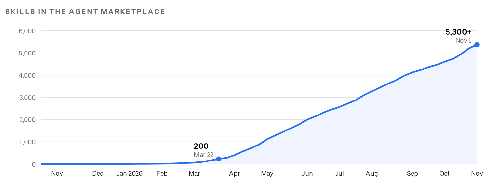
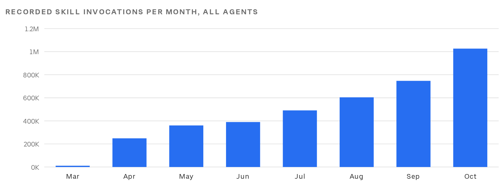
Always-on、Core、Domain
目标是让团队容易写技能，同时默认给他们一套经过挑选的技能。为了又快又有质量，我们把市场分成三档，技能往上毕业时，质量和效率的期望跟着升。毕业一份技能，我们跑评测系统，外加一套质量和有用性检查。
- Domain。任何团队可以开自己的区。每个区点名评审人，所以团队一次同伴批准加一次 CI 检查就能发，不必等中央组。
- Core。用得广的技能挪到这里。它们被推荐、被测、由一个团队维护，平台团队审每一次改动。
- Always-on。大约 100 份广泛有用的技能对所有人开着，新员工第一次跑就有技能。覆盖拉取请求、代码评审、工具访问、数据分析和聊天。
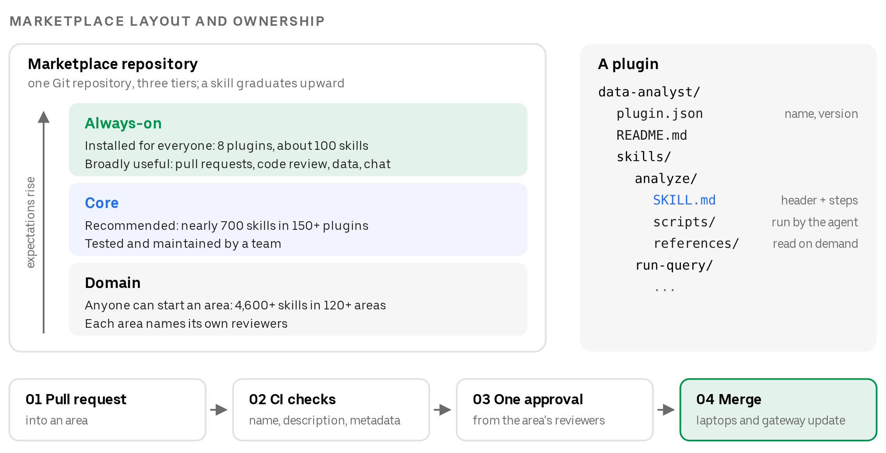
每种 agent 一次安装
支持许多不同的 agent 是我们策略的一部分。这是机会，因为人会挑适合任务的 agent。这也是挑战，因为每个 agent 定义和安装技能的方式不同。
我们做了一个 CLI，叫 aifx，用来启动每一种 agent、存配置。后来扩进去技能管理、MCP 调用、可观测性、以及更进阶的配置。aifx 处理各平台上技能定义和安装的差别。人或 agent 跑 aifx plugin add data-analyst 安装一组技能（叫插件），或 aifx skill add analyze 安装一份技能。aifx 把选择记在一份配置文件里，应用到接下来启动的那个 agent。工程师在 Claude Code、Codex、OpenCode 之间换，技能还是同一套。
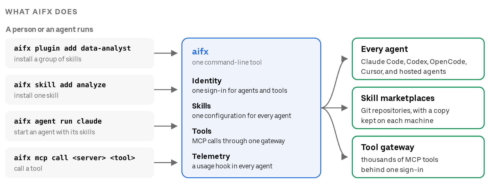
aifx 按层合并配置：公司默认、团队或项目、仓库、工作目录、用户、以及本地覆盖。后面的层只加插件、从不拿掉，所以仓库可以声明在里面干活的每个人需要的插件。
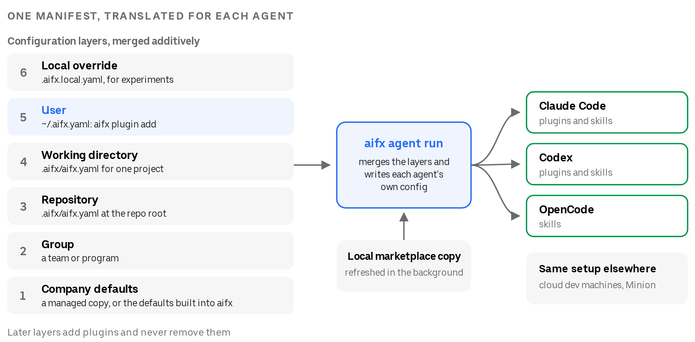
aifx 管工程师、数据科学家和其他角色的 persona。它设定默认技能和配置。
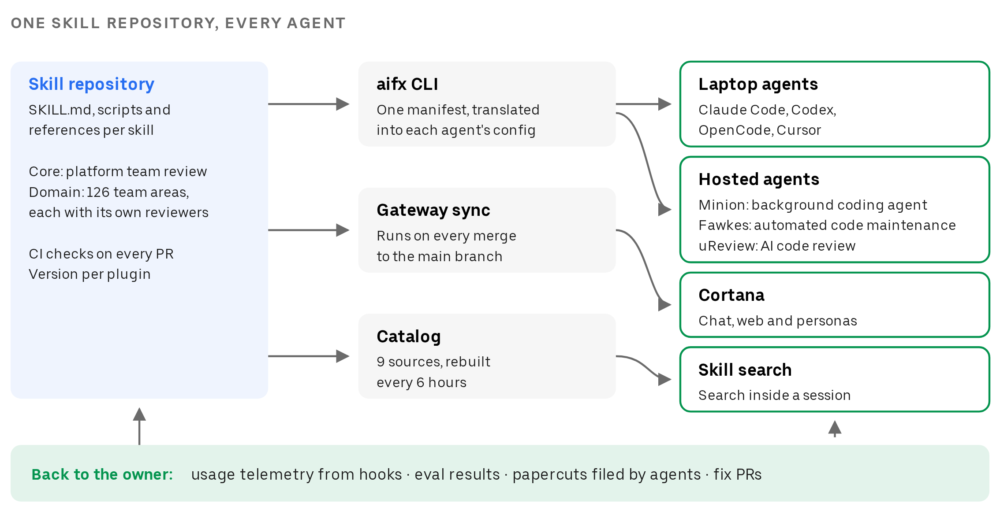
4怎样发现
有几千份技能时，帮用户给一段工作流找到对的技能是要紧的。我们有一份 find-skills 技能，能找到并下载一份有质量的技能，在特定工作流里跑。为了支持发现，我们用评测和运行次数给技能分类、排名，并做一个技能质量分。
用内部上下文图，任何员工可以问：「给我同伴在用而我没用的技能。」
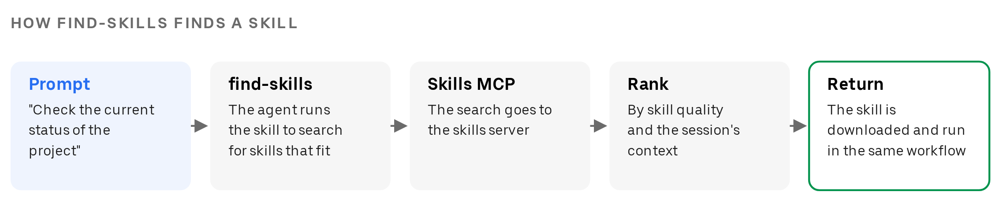
5怎样量使用
我们用 OpenTelemetry 在钩子里从 agent 收集使用统计。钩子发送会话开始或工具调用这类事件，好记下技能使用和它的上下文。工具是技能时，事件记下技能、版本、以及是 agent 选的还是用户敲的命令。事件不带提示文本，也不带文件内容。
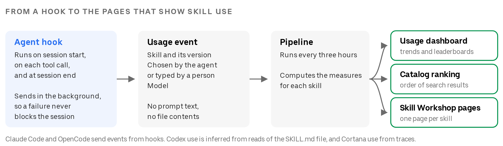
从这些事件里，我们给每份技能算 12 项：用户、留存、成本、延迟、错误，以及其他。作者在 Skill Workshop（我们的写作工具）里这份技能的页面上看到它们。
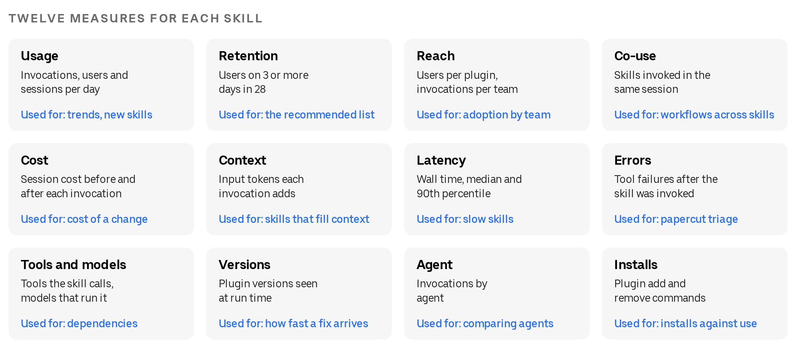
6质量
技能造出的 agent 工作流，带来的挑战和 agent 本身不同。它们被期待在许多不同上下文里工作，在正确答案需要人判断的领域里工作，也在许多不同 agent 环境里工作。我们做了 Skill Workshop，一份插件加一个网页应用，帮技能作者和用户用科学、系统评测和用户反馈改善技能。
Skill Workshop
技能有生命周期。作者写、测、经市场发出去。然后作者从真实运行里改善它，直到更好的模型让它不再必要、它退役。Skill Workshop 给每个阶段有工作流，给每份技能有一页，展示使用、成本和质量。
技能从一份写清楚的 spec 开始。模型和 harness 变得快，我们希望实现在迭代时技能还能工作。Spec 保住技能的意图：目标、输出、必须或禁止的工具动作、以及它瞄准的 agent 和模型。Skill Workshop 从 spec 编译 SKILL.md 和测试提示，模型和 agent 变了就再编译。
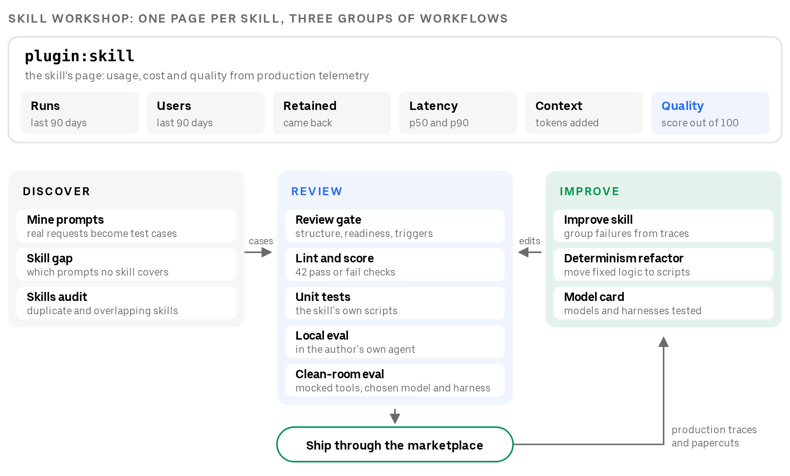
技能代码气味蒸馏进 linter
我们把什么让技能好、什么惹麻烦、研究论文、模型提示指南，蒸馏进一个带通过/失败检查的 linter。最有用的几条：
- 步骤编号，每步一个目标，至少有某种软核验。
- 每步给出具体命令，核过结果再走下一步。
- 技能有错误恢复一节：失败和修法的表。「再试一次」不算。
评测
我们需要走过对技能质量的手工用户反馈。我们给许多 agent 表面上评技能做了几套系统。我们做了手标提示和运行时环境来测它们。我们对一套评测的指导大约是：5% 金标，固定输入、期望输出、带工具 mock；80% 真实提示，按轨迹打分；15% 由作者评判。轨迹是指 agent 是否按对的顺序用了对的技能和工具。
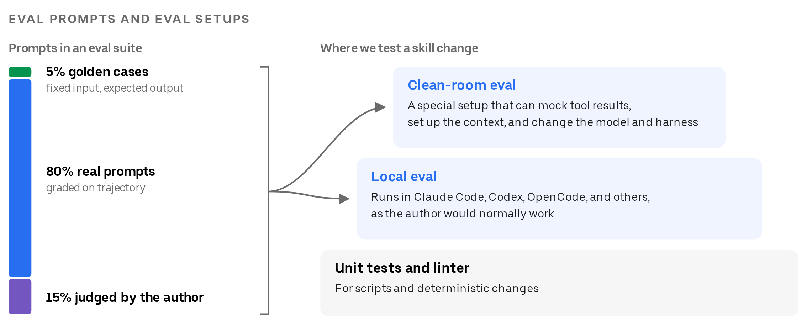
我们在三个地方跑评测：Minion，后台 agent 平台；AES，托管的 agent 沙盒；devpods，远程开发机。干净房间抓住对作者笔记本的依赖。就像每个说「在我机器上能跑」的开发者，逼一次远程布置找出许多问题。有些技能指望特定文件路径、缓存文档、或特定操作系统工具才能工作。
和非确定性 LLM 打交道时，评测仍是一半艺术一半科学。按我们的经验，跑 70%–90% 通过的评测，可能比 100% 通过的更有用。答案会变，评判也会。100% 通过率可能意味着评测量不到答案里有意义的变化。
决定一次评测跑过不过，就是决定什么要紧。措辞需要一字不差吗？什么可以变、意思不变？Agent 自己未必稳定地做这些区分。它们可能盯上不相干的细节，或在答案格式对了的时候漏掉一次显著幻觉。
LLM 当评判最好有一套人标过的集。技能作者必须做这些、从用户收集、反复打分。所以我们把评测套件分成金标、真实提示、作者做的例子。
轨迹评测看 agent 试着做什么、为什么。它不看结果。Agent 有没有按预期用 MCP 或流程？有没有查那张表、读那份 Google Doc、核上下文图？有没有看错误恢复说明？我们用结果分和轨迹分来评对技能和工作流的改动。
少有时更好：消融
我们测从工作流里拿掉词、拿掉整份技能，同一批输入提示，隔离的评测环境。对整份技能，我们把真实提示重放一次带技能、一次不带，盲评判挑更好的答案。我们用真实提示测用得重的技能：带技能、不带、以及只带技能的一部分。模型变好时，更多字可能把表现拉下去，所以我们也测从技能里拿掉词。
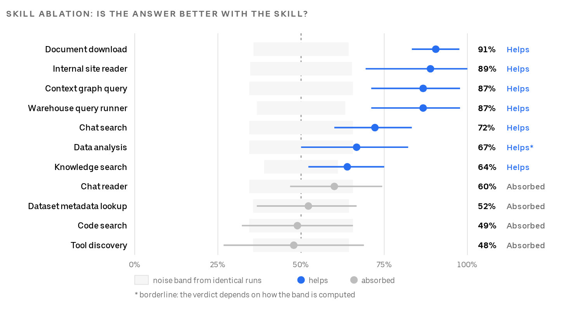
多数情况下，技能让会话更成功，也更便宜。最大的赢来自给 agent 它不容易找到或看懂的东西，比如内部文档，或跑数仓查询的办法。
7效率
技能让我们能量一项任务的成本，于是我们把更多会话挪到用技能。不用技能的会话可能试许多事、找到错答案和错表、把工具用砸。有了技能，拿到正确答案、并且拿得省的概率上去。在一份跑数仓查询的技能的消融里，没有技能的会话多做 13% 的工具调用，工具错误是六倍，时间多 31%，带技能的答案赢了 87% 的对照。
改善答案的技能也有成本。它的说明、工具调用、以及它们的结果进 agent 的上下文，会话里后面每一轮都再为那段上下文付钱。我们量每份技能花多少，用几根杠杆把成本压下去。
怎样量一份技能的成本
Agent 保持会话到目前花了多少的累计，我们的遥测在周期性快照里报告这个累计。Agent 调用一份技能时，我们取调用前最后一次报告的累计、调用后第一次报告的累计，相减。差就是这次调用的成本。我们按天把每份技能的调用加起来，除以调用次数，得到每次调用的成本。
这个数包括模型读技能、随后的轮次、以及那扇窗口里的其他工具调用。我们用这个数看成本去哪，并比较改动前后的技能。
我们用来压技能成本的杠杆
一个中央团队去追所有最常用技能的效率，平台主人对待技能所有权像对待 UI 或软件所有权。他们给质量和效率设 KPI。
- 能用代码就别用 LLM。从不变化的步骤跑在脚本里，模型不必读每个工具定义和每个结果。这就是下面的 Code Mode。
- 技能在更便宜的模型上的 worker 里跑。技能派一个子代理，调用方挑模型：查找用小模型，把结果对上用最强的。大工具结果留在 worker 的上下文，只返回有界摘要，后面的轮次不再为它付钱。一次前后对照里，一份 tracing 技能每次调用的成本掉了 46%。一份部署技能第一周没掉，所以我们在改动之后分别量每份技能。
- 技能加载时就跑脚本。结果小、而且总是需要时，技能在加载时跑脚本，把输出放进提示，少一轮模型。一份搜索技能从四轮变成三轮，平均成本掉了 32%。
- 把轮询挪出主会话。我们花得最多的 20 次会话里，通知轮次大约占花费的三分之一。9 月我们把拉取请求监视技能的轮询挪到更便宜模型上的后台 agent。
Code Mode：能用代码就别用 LLM
对确定性的活，代码更便宜、更好测、结果也更好。我们看见许多 token 花在同一类工具调用上：跑查询再读响应、读和发 Slack 消息、搜远程代码、读和发邮件。Agent 只要结果，却必须把一切经 LLM 和它的上下文窗口加载并跑，又慢又贵。
LLM 客户端里默认的 MCP 安装把这弄得更糟，因为它把每个工具的完整描述加载进每一次调用。超过 100 个工具时，那些定义在用户还没打字之前就占 50,000 到 70,000 token。
受 Cloudflare 的 Code Mode 启发，我们把这些流挪进经网关调工具的工具脚本。在我们的配置里，这避免预加载那些工具定义，agent 只读每个结果里它需要的部分。脚本改善了最常用流的成功率、延迟和成本。
Code Mode 技能变成公司其余技能按名字引用的包，让它们可以依赖高质量的实现。我们也在技能和插件里挡住安装工具服务器的 .mcp.json 文件。
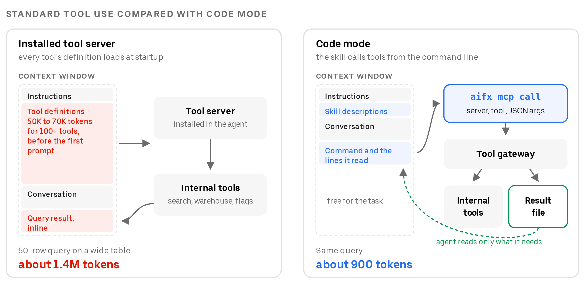
8持续改善，以及 agent 给自己报 bug
技能可能因为一千种原因停摆。模型升级改了 agent 读说明的方式，工具改了旗标，或 agent harness 改了它怎么跑技能。
Agent 知道技能、工具或流不工作时。Agent 知道自己在挣扎着做被告知的事，已经花了 100 轮和某个怪错误打架。它看见帮助文本列着、工具却拒绝的旗标；命令出错时仍以 0 退出；查询该匹配却返回空。
Agent 有时能找到绕法，但会浪费一堆 token 和宝贵上下文。我们发现，加一份一直可用的技能，让 agent 把看到的摩擦或 bug 记下来，能造出一个有力的改善飞轮。
发现问题
我们把每份报告叫 papercut。Agent 用 log-papercut 记它，这是一份 always-on 技能，所以每个 agent 都能看见、不用被要求就能报。这改善以后的会话，也改善出 bug 的那次会话，因为 agent 知道有时东西就是坏的，它该认出自己在挣扎。它甚至可以查别人怎样绕过那个问题。
报告写 agent 试了什么、期望什么、发生了什么、什么能修好。全部报告进一个看板，按技能分组。
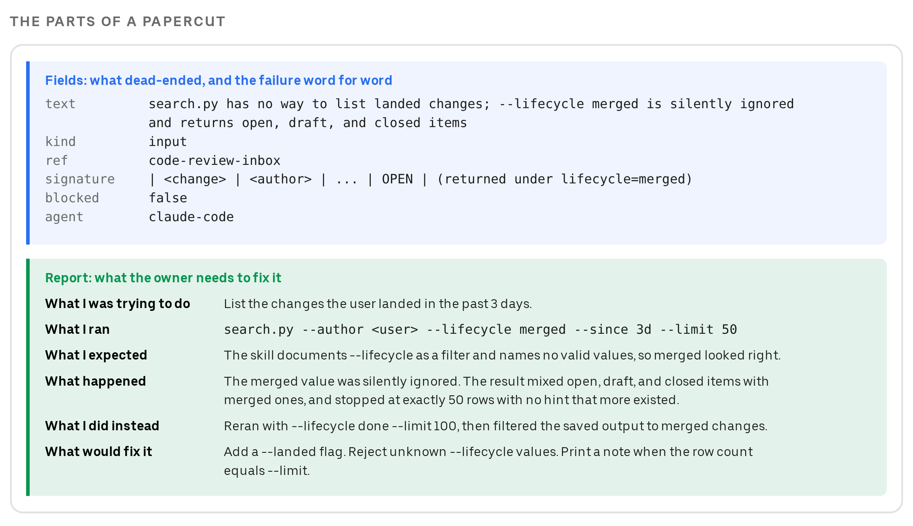
解决问题
一份 papercut 被分组、分诊、分析根因、修好、评测、批准。修法在外面跑起来之后，被量过、核过回归，工单才关。
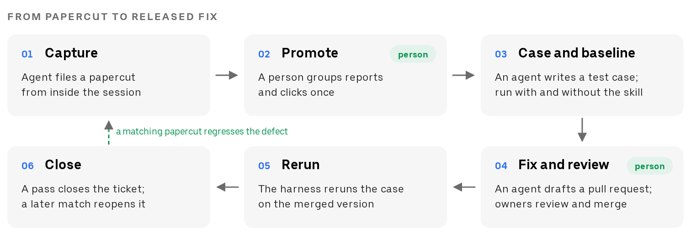
三个月里 agent 记了几千份 papercut。几百份已经修好，修法改善了工作流，也让它们 token 省得多。几处有意思的修：
- 拉取请求技能把提交说明写到一份共享临时文件，两个并发会话改了对方的拉取请求。
- 一份部署技能让 agent 把 epoch 秒传给期望毫秒的 API。
- 一份配置查找技能在请求的键不存在时，无错误地返回另一个属性。
- 一份拉取请求技能在没有 CI 检查的仓库上等 CI，重复同一个 404 直到超时。
人的信号
和 agent 怎么想无关，我们对 agent 会话有人评判。在 Fawkes（Uber 的自动软件维护工厂）里，我们有开拉取请求的代码维护技能。如果一条拉取请求有评论和迭代、或没被接受，我们用那些信号改善造出它的技能。被挡住的拉取请求进评测集。我们在许多领域和 agent 平台上用同一模式。
9收束
技能把词变成动作和结果。使用在涨、模型在变好，我们的焦点从写技能挪到技能质量和评测。还开着的问题是评那些很少跑、却很要紧、又很难判的工作流。投资时，我们在试轨迹和转写分析、结构化的人标注、以及技能路由。
TL;DR
- 每种 agent 一种格式、一个仓库。同一份技能跑在笔记本上的 Claude Code、OpenAI Codex、OpenCode、SpaceXSI Cursor，以及我们所有托管 agent 里。命令行工具 aifx 给每个 agent 表面提供身份、技能分发和 MCP 连接。
- 技能给所有人，不只给工程师。工程师用它们做根因分析、实验读出，以及其他。其他团队用它们取指标、准备给评审的文档草稿、帮客户经理答商户支持问题。
- 先写 spec。一份 spec.md 记下技能必须产出什么、支持哪些 agent 和模型。Skill Workshop 从它编译 SKILL.md 和测试提示，模型和 agent 变了技能还能工作。
- 少有时更好。我们把真实提示带技能和不带各重放一次，盲评判挑更好的答案。模型变好时，有些技能需要改或退役。
- 从转写改善技能。作者读自己会话里技能真实运行走歪的地方，把每次失败变成测试例。
- Agent 给自己报 bug。Agent 碰到坏旗标、错文档或静默错误时，记一份叫 papercut 的结构化报告，主人拿到它。
接下来
- A/B 测技能。我们想大规模 A/B 测技能里有什么。这会让我们给要紧技能做 canary 改动。
- 按模型编译技能。模型在提示指南和建议上漂时，我们发现不同措辞和长度的 SKILL.md 在不同模型家族上更好用。
- 收集和处理技能运行的转写。我们会按评测给会话建索引，记下用户想做什么、发生了什么、有没有碰到麻烦、成不成功。我们会问能改善什么，以及什么真的好、该分享给更多会话。
- 技能推荐。我们会告诉用户该用哪些技能。
- 任务路由器。用户想做的每件事，可以问一个地方，它路由到对的 agent、技能和上下文。
这项工作跨 AIFX、Developer Platform、Michelangelo、uReview、Fawkes、Minion、Cortana、Agentic XP 和 Conan AI 团队，以及 Uber 里写和维护市场技能的几百名工程师。
封面图由 ChatGPT 生成。脚注 1：Shyam Sankar，访谈 Ben Thompson，Stratechery，2026 年 10 月 29 日。
10出处
这篇是译文。原文 Uber Engineering，How Uber Evals 1 Million Agent Skill Invocations a Month，2026-11-23。推文 @UberEng。图来自原文。
一年从 1 个技能到 5,000 多个、一个月超过 100 万次调用、Always-on 大约 100 份、评测套件 5% / 80% / 15%、数仓技能消融里工具调用多 13%、错误六倍、时间多 31%、带技能赢 87%、tracing 技能每次调用掉 46%、搜索技能平均成本掉 32%、Code Mode 50 行查询大约 140 万 token 对 900，都按原文转述。我没有 Uber 内部遥测，也没有核过图上的点。